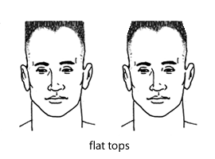
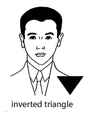

SECTIONS
Men's short haircuts: style names and descriptions
Facial shapes & facial features: picking a style that suits you
Introduction
This section provides information about men's short haircuts, including common style names and basic haircut terminology. Special emphasis is placed on the barber shop environment (as opposed to upscale hair salons or haircut chains), but the terms and styles used herein can be applied in many shops or salons in the United States. Style names and interpretations may vary somewhat in different neighborhoods and locales in the U.S., or elsewhere in the world.
This page also includes a section on facial shapes, as well as suggestions of styles that may look good with certain facial features. Readers may also want to use this page in combination with the facial hair page, for beard and mustache ideas to complement their haircut and facial type.
The barber shop environment
Beginning with the ancient civilizations of Greece, Rome, and Egypt, barber shops have historically been a place where men have gathered for not only a haircut, but often for friendly talk about local happenings, politics, news, weather, sporting events, and anything else under the sun. Barber shops in various historical periods provided services in addition to haircutting, such as baths, massage, shoe shines, food and drink, entertainment, tooth pulling, blood letting, and even surgery! Prior to the advent of an easy-to-use, mass-produced safety razor in the early twentieth century, a large percentage of men would visit a barber regularly-- sometimes several times a week-- to have their faces shaved. All these factors went into making the barber shop an important gathering place in the lives of many men throughout history.
The cutting and styling of women's hair has also been part of the history of barber shops, though the popularity of that trend has waxed and waned in certain locales and time periods. In general, today's barber shop (as opposed to a styling salon or a haircut chain) is considered by many to be primarily a men's domain, though some shops also cut women's hair, and some feature female barbers.
Though "old school" barber shops have declined in number over the past few decades, there are still many men who enjoy the atmosphere and barbering skills found in their neighborhood shop. For men who wear short hairstyles such as crew cuts, flat tops, high and tights, fades, butches, and ivy leagues (more on these styles below), a good barber shop is usually their best and most economical choice.
First time in a barber shop?
If you've never been to a barber shop before, the experience can be quite different from a hair salon or a discount haircut chain. Unlike more upscale hair salons, most barber shops offer quality haircuts at affordable prices; usually, you can plan to pay somewhere around $10-$15 for a haircut (give or take a few dollars, depending on the locale). While most salons and haircut chains do not offer facial shaves, many barber shops routinely offer shaves, often including warm lather and sometimes a hot face towel.
A few barber shops may request that you make an appointment before you visit, but most shops operate on a "first-come, first-served" basis. When you enter a first-come, first-served shop, take note of who was already waiting ahead of you, and keep a mental note of your place in the order as new people enter, so you'll know when it is your turn. (Newer shops may use sign-in lists to minimize confusion.) It is customary when you've entered an unfamiliar shop to take the next available barber when your turn has come up. However, once you have established a relationship with a particular barber in a shop, it is perfectly acceptable to wait for that barber when your turn comes up. For example, if it is your turn to get a cut, but your favorite barber, Sam, is still cutting another guy's hair, you can simply say, "I'm going to wait for Sam." Unless someone else who was ahead of you is also waiting for Sam, you'll be next in his chair.
Once seated in his or her chair, your barber will ask a few questions about how you would like your hair cut, at least until getting to know your preferences and style. They may ask when your last haircut was, whether you wish to simply trim the style you currently have, whether you would like a blocked or tapered neckline (details below), if you would like your sideburns trimmed, if you would like a part in your hair, if you want your neck shaved, if you would like your beard trimmed, if you'd like a full shave, and so on. If you request a very short cut, your barber may ask if you know the clipper blade number that you prefer. Keep in mind that different clipper manufacturers may use slightly different numbering systems for their blades and attachments (more on clippers below). If you have a specific, traditional style in mind (such as a crew cut or a butch), feel free to request it, but understand that these styles can be interpreted slightly differently from barber to barber. It may be wise to describe specific details you are looking for until you and your barber become more familiar with one another.
Unless your hair is very dirty, most barbers will not shampoo your hair before cutting. Depending on the preference of the barber, they may use clippers or shears (haircutting scissors) to cut your hair; one is not necessarily better than the other, as they are both means to an end. Your barber may use warm lather and a straight razor to clean up the outlines of your cut around the ears and neck.
Payment is usually given directly to the barber who cut your hair at the end of the cut, and tipping is customary (between 15-20% is appropriate for most areas of the country).
Finding a good barber
The easiest way to find a good barber is to ask around. Seek out men with good-looking short haircuts and ask them what shop they go to. Most guys who have a good barber are happy to pass along his or her name. If you have a particular type of hair (i.e., very curly, nappy, very straight, receding hairline, etc.), try to ask for barber shop advice from men who share that feature. For example, some shops are especially skilled in cutting the various textures of black men's hair.
Because barber shops are often social gathering places for men, you may also want to find a place where you enjoy the environment. Some shops are constantly full of boisterous talk and high energy, while others are more slow-paced and relaxed. Some have markedly older clientele, some serve mostly younger men. Some shops are "hip" and modern, while others make you feel like you stepped back in time when you walk through the door. There are single chair shops and multi-chair shops, shops that have the radio or television playing, shops that are quiet, shops that cater to military-style cuts, shops that do lots of businessmen's cuts, and so on. In short, there are lots of unique barber shops out there, and you might want to try out a few before you find your favorite.
Ultimately, you want to find a barber shop where you get a great haircut and an enjoyable visit to boot.
Haircut terminology
Summarized below are a number of haircutting terms; these are provided so that you are able to better communicate with your barber when trying to describe your preferred haircut. If you'd like to learn more about the basics of hair itself, you may also want to read the male pattern hair loss page, which has a section devoted to explaining hair structure and growth patterns.
Arch
The area just above and behind the ear; the outline of the cut connecting the sideburn area to the hair at the side and back of the head. Everyone has a natural arch, and many barbers will try to trim the arch in a way that simply cleans up and enhances the natural arch. Cutting a lower-than-average arch can minimize large ears, and cutting a higher-than-average arch can make small ears appear larger. However, if an arch is trimmed too high or too sharply without proper blending, it may look awkward when it grows out.
Bangs
Hair in the front of the head that is worn down over the forehead; sometimes also called "fringe." Bangs can be long or short, and can be worn straight down or combed to either side. Some men wear bangs to cover a large or prominent forehead, or a slightly receding hairline.
Blocked nape versus tapered nape (or, blocked neck edge versus tapered neck edge)
A blocked nape refers to cutting the hair straight across in a definite line where the hairline meets the back of the neck (the nape). It is sometimes also referred to as "squaring off" the nape. A tapered nape refers to a gradual decrease in the length of hair at the back of the head to zero, following your natural hairline. Both are shown in the illustration below for comparison.
A barber will usually ask if you prefer a blocked or tapered nape. If you have a skinny or long neck, blocking can add the illusion of width. A tapered nape will look good on a short or thick neck. In general, a tapered nape tends to look a bit neater and more natural than a blocked nape once your hair starts to grow out a few days after the haircut.
Clippers, blades, and attachments
Electric clippers utilize different-sized detachable blades or plastic guard attachments to cut hair to a uniform length. They can also be used with special tapering attachments or combs for blending. Clipper blades and attachments are usually categorized by numbers. Generally, the smaller the number of a blade, the shorter the cut; when blades and attachments are labeled "0" (zero), the more zeros, the shorter the cut (i.e., a 00000 blade cuts shorter than a 000 blade). The exact length of hair left by a clipper blade will depend on the manufacturer and model number of the clippers. Three very common clipper manufacturers used by barbers are Andis, Oster, and Wahl; some of their common blade numbers are shown below.
Old-style hand clippers are also available in numerous blade lengths, but electric clippers are far more commonly used.
In the lists below, the first number shown is the blade number, and the second number is the hair length the blade will cut. The blade size information was obtained from manufacturer web site product listings.
Andis UltraEdge blade series |
Oster 00000 -- 1/125 inch |
Wahl Competition blade series |
Crown
The top rear portion of the head, usually where hair growth begins in a swirl pattern.
Layering
Layering refers to cutting hair at different lengths throughout the hairstyle. Layers can be blended so that you cannot see where one length leaves off and another begins, or they can be left unblended, giving a chunky appearance. Layering can help remove bulk and weight from areas where hair is generally left longer, like the top of the head. Layers can be uniform throughout, such as trimming every hair on different parts of the head to approximately the same length (instead of being cut longer in the center and shorter around the edges). Some kinds of layered cuts can give a more modern, "messy" look when hair gel or pomade is applied. In short, layering is a means to an end, and it doesn't refer to a single specific style.
If you are getting a short hairstyle and want it layered, you can ask your barber for a layered cut. However, if you decide to wear a layered style that is very long (several inches or more on top), you might want to go to a men's hair stylist where they specialize in longer men's cuts. Barbers can certainly cut longer men's styles-- some are quite good at it-- but in general, most barber shops specialize in shorter men's cuts. Choose a shop that can do the best job with the styles you like to wear.
Part
A line of scalp (usually running parallel with the sides of the head) that can be seen when sections of hair are divided and combed in opposite directions. A part can be made on any style where the hair is long enough. In the recent past, the conventional side for men's hair parts was the left side, but hair may be parted on either side, or in the middle. The natural part begins at the crown, which can occur on either side of the head. See also "crown."
Shaving
In the context of hair cutting, shaving refers to the act of wet shaving, which is not the same as using a clipper or beard trimmer on its lowest setting. Having your head or face shaved smooth is different from having your hair clipped down to almost nothing.
Taper
The word "taper" refers to the act of creating a gradual, smooth change in hair length from one part of the head to another (for example, starting the hair very short at the neck edge, and gradually increasing the length of hair as you move toward the top of the head). A taper shows no abrupt lines or steps where the hair suddenly looks longer or shorter. Most short cuts employ at least some tapering, though where the tapering begins and how tight it is will depend on the style and preference of the wearer. A "taper" cut is a general name for a cut that gets progressively shorter as the hair approaches the nape of the neck. You can have a longish taper cut or a very short taper cut-- what makes it a "taper" is the subtle graduation in length.
Some people use the word "fade" interchangeably with "taper," but keep in mind that in some shops "fade" will be interpreted to mean a certain local style. If you use "fade" to describe that you want a tapered effect, you might specify that you want the cut to "fade gradually from short in the back to longer on top," or a similar description. Just be careful to specify length, and how drastic you want the fade/taper to look.
A frequent question asked by barbers is whether you would like a "tapered" neck or a "blocked" neck. See "blocked nape versus tapered nape," above, for an illustration and explanation of the pros and cons of either style.
Thinning
The removal of some hair, usually on the top, to reduce thickness or volume, and to help shape the hair into a certain style. Thinning can be done using regular haircutting shears, special "thinning shears," or a razor.
Men's short haircuts: style names and descriptions
To follow are a few common short haircut style names and illustrations. Keep in mind that barbers (and individuals) in different parts of the country or world (or even across town) may interpret these styles differently, or may have popular local names for them. Some style names are fairly generic, and can vary quite a bit in length and style interpretation (for example, there are many ways to cut an "ivy league," and a "crew cut" can vary a bit in overall length), so until you and your barber know get to know each other, be specific about your length preferences, how you prefer your hair to be tapered, and so on.
This is nowhere near an exhaustive listing of possible men's haircuts; it just includes some of the more well-known short styles. You and your barber may come up with variations on the basic themes of these haircuts that suit your face and personal style. You may also wish to check some of the sites in the Resources section for photo examples of these styles, so you can see the variety of possibilities.
Bowl cut
This cut features longer hair around the top of the head and shorter hair around the lower part of the head with little or no blending between the two lengths. It gets it name because it looks as though someone took a bowl, placed it on top of the head like a helmet, and then cut all the hair that stuck out from beyond the border of the bowl-- a popular way of cutting hair at home on the cheap. Because this style is frequently associated with kids getting their hair cut at home by mom, it may make the wearer appear boyish and young.
Brush cut
For the brush cut, the sides and back are cut short and tapered, but the hair on the top of the head is usually cut to the same length (i.e., no tapering in length on the top of the head), following the curve of the head. The top is worn straight up to resemble the bristles of a brush.
Burr (also known as an induction cut)
The burr is created by taking a clipper with a very short blade and cutting all the hair on the head to the same length (usually 1/8 inch or shorter). It is shorter than a "butch," which is usually about 1/4 inch or so. You can see much more scalp with a burr than you can with a butch. A burr is short enough that it feels a bit rough, like sandpaper, when you rub the head against the grain of hair growth.
Business man's cut
A business man's cut is a generic term for a conservative, short (but not too short) haircut that is appropriate for an office setting. It usually refers to a tapered cut on the back and sides, with enough length on the top of the head to be able to part the hair or wear it brushed back from the forehead. There are several possible variations on the business man's cut.
Butch
The butch is created by taking a clipper and cutting all the hair to the same length on the top of the head (typically about 1/4 inch or so). It is longer than a "burr," which is often considered to be 1/8 inch or less. A butch may or may not be tapered around the ears and near the neckline, depending on the preference of the wearer.
Caesar cut
In the caesar, the hair on the top of the head is layered to around a length of 1 to 2 inches, with the front combed forward into short bangs. The back and sides are tapered. The style is named after Julius Caesar, who wore short bangs forward in a similar way.
Convertible
"Convertible" is a generic term referring to a style that can be worn in more than one way. Taper cuts or layered cuts can be styled with enough hair left on the top so they can be worn parted, without a part, forward in bangs, combed up and back, to the side, etc., depending on the length and the hair type.
Crew cut
A crew cut is a fairly generic term for a very short cut that is tapered on the back and sides as well as tapered on the top of the head to have a little more length toward the front hairline. The contour of the head is usually followed on the top, giving a somewhat rounded look. A crew cut can be considered a very short version of a classic taper cut, or even a very short pompadour if the hair is brushed upward in the front.
Fade
A fade is an extreme type of taper cut, where the hair on the sides and back is cut very, very close to the head and then tapered upward-- usually beginning above the ears or at the temple-- to a longer length on the top of the head. There are many local and popular names for different kinds of fades, such as temple fade, low fade, Philly fade, Brooklyn fade, and more; be sure to discuss what you'd like with your barber.
Flat top
In the flat top, the hair on the sides and back are usually cut in a short taper, and the hair on the top is cut to stand up and give a very flat appearance to the top of the head. There are a number of possible length variations with the flat top, though the longer the hair on the top, the more likely you will need some sort of styling product (hair wax) to keep it standing up straight. There are also styling variations as to how the sides can be cut to meet the top: the sides can go straight up and give a square appearance to the top of the head (often referred to as a "boxy" flat top), or the sides can be somewhat contoured toward the top, giving a more curved appearance (often referred to as "rounded" or "beveled").
A very short flat top usually leaves the hair in the middle of the head cut tight to the scalp. When viewed from above, that area of exposed scalp is referred to as a "landing strip." The "U" shape of hair that surrounds a pronounced landing strip (again, when viewed from above) gives a very short flat top the descriptive name "horseshoe flat top." A flat top with longer hair on the sides of the head is called a "flat top with fenders."

High and tight
The high and tight is frequently worn in the military, particularly in the Marine Corps. The sides and back are extremely short, either clipped almost to the skin or shaved with a razor all the way up to the crown of the head. The top is usually worn very short (usually 1/4 inch or shorter, though some guys wear the very front part a little longer) and on the forward part of the head. There is minimal blending between the sides and the top; the amount of blending varies by preference. A more extreme version is the "high and tight recon," described below.
High and tight recon
The high and tight recon is an extreme version of the high and tight (above). The sides and back are shaved very high, about an inch or two past the crown of the head. There is no blending between the sides and the top. The patch of hair left on the top forward part of the head is more narrow and smaller than in a high and tight. The recon resembles an extremely short mohawk.
Horseshoe flat top
See "flat top."
Induction cut
See "burr."
Ivy league
The sides and back are cut short and tapered across the crown, and the hair gradually becomes longer and fuller toward the front. In a classic ivy league (shown in the illustration), enough hair is left in the front so that it can be neatly parted and styled, usually with pomade or gel. More contemporary ivy league cuts may style the hair upward or forward in the front, but are still generally neat cuts that follow the shape of the head.
Landing strip
See "flat top."
Layered cut
Layering refers to cutting hair at different lengths throughout the hairstyle. Layers can be blended so that you cannot see where one length leaves off and another begins, or they can be left unblended, giving a chunky appearance. Layering can help remove bulk and weight from areas where hair is generally left longer, like the top of the head in some men's cuts. Some kinds of layered cuts can give a more modern, "messy" look when hair gel or pomade is applied. In short, layering is a means to an end, and it doesn't refer to a single specific style.
Layers can be uniform throughout, such as trimming every hair on different parts of the head to approximately the same length (instead of being cut longer in the center and shorter around the edges). If you are leaving your short hairstyle a little on the long side overall, you can ask your barber for a layered cut. If you decide to wear a layered style that is very long (several inches or more on top), you might want to go to a men's hair stylist where they specialize in longer men's cuts.
Pompadour
A pompadour is a generic term for a style that wears the hair brushed up and back from the forehead. Pompadours can be very short or very long on the top. Elvis Presley wore a few different pompadour styles in his lifetime, some short and some long. Often, styling products such as pomade are used to keep a pompadour in place.
Regulation
"Regulation" is a generic term that refers to short, military style haircuts. The military isn't entirely specific about how hair should be styled, so there are many different cuts that can technically qualify as adhering to regulations. For example, Marine Corps regulations state that the hair on the top of the head should not be longer than 3 inches, and that the hair from the neck hairline should begin at zero length and be graduated toward the upper portion of the head. As for sideburns, they must not extend below the top of the orifice of the ear, must not be styled to taper or flare, and should not have extended hair length of more than 1/8 inch. Those regulations leave room for interpretation, and include many standard short cuts, including burr, butch, crew cut, etc. However, those styles are not what is typically referred to when someone uses the term "regulation cut." The styles more commonly known as "regulation," are short cuts on the top (can be worn parted, brushed upward, crew-cut-style-taper, etc.), with the back and sides clipped very close (or shaved) and tapered so that scalp is plainly visible. This area of scalp is referred to as "whitewalls," and the height of the whitewalls determines whether a cut may be called "low regulation" (short whitewalls), "high regulation" (tall whitewalls), or "medium regulation" (somewhere in the middle). The illustration below shows a few variants of the regulation cut.
Taper cut
A classic taper cut is simply a short haircut where the sides and back are cut progressively shorter down toward the neck, with even blending throughout. The hair on the top of the head is also tapered, but can be cut quite short, or left long enough to part or otherwise style with gel or pomade. A good taper cut should show no demarcation lines; the transitions between hair lengths should be smooth. Most short cuts employ at least some tapering.
Temple fade
See "fade."
Whitewalls
Areas where the back and sides are clipped very close (or shaved) so that scalp is plainly visible. This area of scalp is referred to as "whitewalls."
Facial shapes & facial features: picking a style that suits you
In order to end up with a really good-looking haircut, it is a good idea to know which styles might best suit the shape of your face, your overall head shape, your hairline, and your facial features. Just because a haircut looks good on your friend or on a celebrity doesn't mean it will necessarily look as good on you!
A good barber will be able to suggest styles that suit your face, head, hairline, and features. Feel free to ask your barber to give you a cut that they thinks will look good on you; just be sure to mention your limits so you don't end up with something that doesn't suit your job or lifestyle.
The following section is summarized from information gathered from the barbering textbooks listed in the Resources section. Styling suggestions are provided for 8 different facial shapes: oval, round, heart-shaped, square, oblong, triangular (also called "pear-shaped"), inverted triangular, and diamond. Tips are also provided for certain facial features, such as prominent foreheads, short chins, small ears, long necks, and so on. Facial shape illustrations are modified from L. Sherman Trusty's The Art and Science of Barbering.
Trans men should keep in mind that your facial shape may change somewhat after you have been on testosterone for a couple of years. The jawline may tend to square up a bit, giving a more angular appearance overall. This is similar to what happens to non-trans boys when they go through puberty. In general, adult men's faces tend to look more angular than women's or boy's faces (though of course there are still a variety of facial shapes among men).
If you are early in transition and are looking for a haircut to help you appear more masculine, try to avoid emphasizing any roundness that may be in your face-- pick a style that gives you a more angular look. Many guys with round or soft faces end up choosing "masculine" styles that are cropped close to follow the curve of the top of the head (such as a butch or a rounded crew cut), but this may not be the best choice, as such styles may make your face look even more round and soft! Also, if the hair on your short style appears very "fuzzy" or "downy," this can add to an overall softer look; you may want to add a small amount of hair wax or pomade to keep fuzzy hair styled and under control.
If you happen to be short in stature, wearing your hair upwards from the top of your head (as in a pompadour, brush cut, flat top, or textured layer cut) can add the illusion of a little more height-- but also choose these a style that looks good with the proportions of your face.
Another factor for trans men to consider is whether your barber or stylist reads you as male or female. If you are being read as female during early transition, a barber may (consciously or unconsciously) cut your hair to give a more feminine look. This is probably not intended in a negative way, it's just that a large portion of women who get short haircuts don't want a men's haircut, so stylists and barbers are trained to accentuate different things in masculine and feminine cuts.
If you are with a barber who reads you as female (or who knows you from prior to transition) and is giving you a feminine cut, you have a few options. One is to explain that you want the cut to look more masculine, or that you want it to look square and angular and minimize softness. You can suggest a style or modifications that you know will help masculinize your face type. A second option is to go to a different barber and get a fresh start. If you absolutely love your barber or stylist and don't want to change, but the approach of requesting a more masculine style doesn't seem to be working, try going to a different shop for a while until you have masculinized a bit more, and then return to your favorite barber or stylist. Once they has seen the changes in your face and overall appearance, perhaps the urge to "soften" your cut will have passed.
FACE SHAPES
See also the facial hair page for suggestions on beard and mustache styles to suit your face.
Oval Face
The oval face is considered to be the ideal face shape, in that just about every style looks good on an oval face. The oval face is slightly wider at the forehead, and features a rounded chin. Try a few different styles to see what suits you best.
Round Face
The round face is shorter than the oval, with forehead, cheek bones, and jaw all of similar width. With the round face, the hairstyle should be cut to slim the face. Very short styles that follow the curve of the head (such as a butch, burr, or a short crew cut) will emphasize roundness and should be avoided. Leaving the hair a bit longer/fuller and adding texture on top will help lengthen the face. Beards should be styled to slim the face as well.
Heart-shaped Face
The heart-shaped face is widest across the cheek bones and the eyes, with a broad forehead. The shape narrows at the jawline and comes to a pointed chin. Most styles will look good on the heart-shaped face, though fullness on the sides of the head should be avoided, as that is the broadest point of the face.
Square Face
The square face has an angular jawbone and chin, paired with a squarish forehead. Hair should be styled to slenderize the face. The hair on top of the head should be reasonably full, possibly with short bangs that blend at the temples. A textured style with layers can look good on a square face.
Oblong Face
An oblong face is long, with a forehead that is about the same width as the jawbone. Hair should be styled to shorten the length of the face. Adding bangs or otherwise styling the hair forward to cover the hairline may work well. Too much fullness on the top of the head should be avoided. Adding a mustache to an oblong face can help break up the length.
Triangular Face (also called Pear-shaped)
The triangular face is often also called "pear-shaped," due to its being wider at the jawline than at the top part of the head. Hair should be styled to give weight and width to the top and sides near the temples. On the lower portion of the head, the hair should be cropped very close to minimize width. Beards, if worn, should not be too full, as this will make the jaw look even wider.
Inverted Triangular Face
The inverted triangle features a wide forehead and cheekbones, and narrows sharply through the jawline and chin. Hair should be cropped close to minimize the width at the top of the head. A full beard can give the illusion of a wider jaw.

Diamond Face
The diamond face is widest at the eyes, and narrow at both the forehead and at the chin. Hair on the top of the head should be kept short, and hair around the temples should be worn fuller to help give a more oval appearance. Bangs can help add width in the front of the head, and a uniform length cut (rather than a traditional taper to the crown) can add width in the back of the head. A full beard can be added to create width at the narrow chin.
FACIAL FEATURES
See also the facial hair page for suggestions on beard and mustache styles to suit your face.
Neck size and length
For those with a short or thick neck, short styles that leave the neck exposed can add the illusion of length. A tapered nape will look good on a short or thick neck. Leaving the hair fuller or longer at the neck will minimize the appearance of a long neck. A thin neck will look better with a blocked nape, which will add the illusion of width.
Ear size
For small ears, your barber may cut a slightly higher than normal arch to give the illusion of larger ears. With large ears, a lower than normal arch can help minimize their size.
Nose size and shape
To offset a prominent nose (large, hooked, or pointed), wearing the hair forward at the forehead and back at sides may help. An off-center part may also help offset a large nose.
Chin size and jawline
For a short or receding chin, choose a short sideburn. A full beard can also minimize the appearance of a short or receding chin. If you have a weak jawline, a dark-colored beard will add definition, but those with very light colored hair should be aware that lighter-colored beards can sometimes create shadows that result in a softer profile. Similarly, dark stubble can help mask a double chin or weak jaw, but light stubble can worsen the problem.
If you have a long chin or jawline, choose a longer sideburn. Wearing a beard and mustache cropped short will minimize a protruding chin.
Forehead size and prominence
For a low or very short forehead, having a short cut or combing hair back makes the forehead appear higher. If you have a wide forehead, try parting your hair in middle. Those with prominent foreheads might try a close arrangement of hair over forehead; wearing the hair brushed upward can also make a tall forehead seem a little shorter.
Receding hairline
Decisions about receding hairlines depend a lot on how far the line has receded! For those who are just beginning to lose their hair in the front of the head, wearing the hair in a caesar cut or an otherwise forward style can help minimize a receding hairline. However, if your hairline pattern has advanced quite a ways backward, wearing the hair forward begins to look awkward and should be avoided. Very closely cropped styles look good on a markedly receding hairline, and many men at this stage of hair loss will opt for the bald or nearly bald look. You may also want to consider adding a close-clipped full beard, a circle beard, or a van dyck to offset a receding hairline. A circle beard or a van dyck can give the face balance if you are wearing a bald or nearly-bald style.
Height
If you happen to be short in stature, wearing your hair upwards from the top of your head (as in a pompadour, brush cut, flat top, or textured layer cut) can add the illusion of a little more height-- but also choose these a style that looks good with the proportions of your face.
Was this page helpful to you?
Please consider donating to ftmguide.org!
Trusty, L. Sherman, The Art and Science of Barbering, sixth edition, Wolfer Printing, 1965.
Shields-Michel, Lorin, et al., Hair Care and Styling for Men, Delmar, 2002.
Milady’s Standard Textbook of Professional Barber Styling, revised edition, Milady Publishing, 1993.
Men's Hair Forum
www.menshairforum.com/talk/
A site for active discussion and advice from hair care professionals and other men about men's haristyles, different hair types, hair products, and barbershop tips. Also features discussions on shaving and facial hair, and there are a lot of photos posted showing popular men's hairstyles. This is a good forum to ask questions about specific styles as well as your own personal hair situation.
Haircuts for Men
haircutsformen.org
Has style photo galleries for short, medium, and long cuts, as well for as curly hair, thinning hair, and facial hair. Also has cut descriptions, product recommendations, and a shop directory for the U.S.
Slickville
www.slickville.com
If you are into slicked back or "greaser" styles, check out this site. Lots of photos, nostalgia, and fun.
The Ed Jeffers Barber Museum
www.edjeffersbarbermuseum.com
Web site for a barber museum in Ohio. Has virtual tours, a great photo gallery of barbering paraphernalia, a barbering timeline, and other fun items.
Ebarbershop
ebarbershop.com
Features hard-to-find men's hair, shaving, and beard and mustache grooming products.
Back to Hudson's FTM Resource Guide main page
Copyright, disclaimer, and privacy information